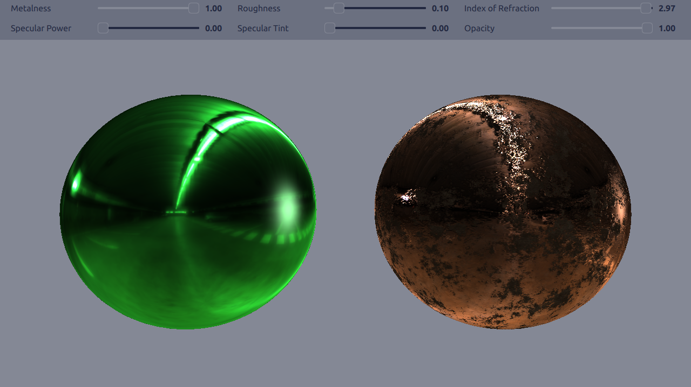

Qt Quick 3D - Principled Material Example
Demonstrates the use of Principled Material.

This example demonstrates how to use the principled material in two different ways in an application.
Setting Up the Scene
Light Probe
We want to use a light probe, as we're going to use reflective metallic materials. We need to enable light probe and adjust its settings to get the result we want.
environment: SceneEnvironment { probeBrightness: 100 clearColor: "#848895" backgroundMode: SceneEnvironment.Color lightProbe: Texture { source: "maps/OpenfootageNET_garage-1024.hdr" } }
Rotating Light
Then we add DirectionalLight and add a rotation for it, to better demonstrate the effect of the metalness and roughness properties have on the materials.
// Rotate the light direction DirectionalLight { eulerRotation.y: -100 brightness: 100 SequentialAnimation on eulerRotation.y { loops: Animation.Infinite PropertyAnimation { duration: 5000 to: 360 from: 0 } } }
Principled Materials
Basic
We will apply a basic principled material on to the sphere on the left. By basic we mean just using the non-texture properties of the material.
Model { position: Qt.vector3d(-250, -30, 0) scale: Qt.vector3d(4, 4, 4) source: "#Sphere" materials: [ PrincipledMaterial { baseColor: "#41cd52" metalness: materialCtrl.metalness roughness: materialCtrl.roughness specularAmount: materialCtrl.specular indexOfRefraction: materialCtrl.ior specularTint: materialCtrl.specularTint opacity: materialCtrl.opacityValue } ] }
Textured
We will apply a textured principled material on to the sphere on the right. When using textures for metalness, roughness, bumpiness, and color the basic property values are applied as multipliers for the values gotten from the textures.
Model { position: Qt.vector3d(250, -30, 0) scale: Qt.vector3d(4, 4, 4) source: "#Sphere" materials: [ PrincipledMaterial { metalness: materialCtrl.metalness roughness: materialCtrl.roughness specularAmount: materialCtrl.specular indexOfRefraction: materialCtrl.ior opacity: materialCtrl.opacityValue baseColorMap: Texture { source: "maps/metallic/basecolor.jpg" } metalnessMap: Texture { source: "maps/metallic/metallic.jpg" } roughnessMap: Texture { source: "maps/metallic/roughness.jpg" } normalMap: Texture { source: "maps/metallic/normal.jpg" } metalnessChannel: Material.R roughnessChannel: Material.R } ]
Controlling the Property Values
There are some sliders for adjusting the values of the different basic properties.
Note: If Metalness has a non-zero value, adjusting Specular Power or Specular Tint has no effect.
Files:
- principledmaterial/MaterialControl.qml
- principledmaterial/main.cpp
- principledmaterial/main.qml
- principledmaterial/materials.qrc
- principledmaterial/principledmaterial.pro
- principledmaterial/qml.qrc
Images:
{kind=link}
{kind=link}
{kind=link}
{kind=link}